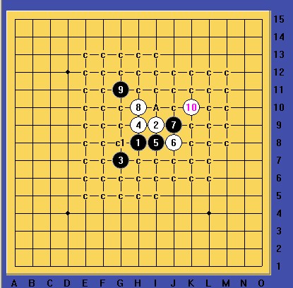
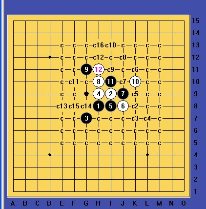
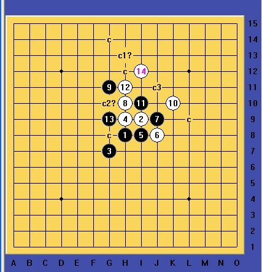

求斜月3打一个败9的地毯，谢谢啊，
#1 求斜月3打一个败9的地毯，谢谢啊， 作者：冷面孤煞 发表时间：2011-5-1 22:22:17
=======上图对应的爱五子棋谱代码如下，以便你拆解：========
h8h9i7g9g8f8f9h10i11
======================================================
 谢谢大虾
谢谢大虾
#2 Re:求斜月3打一个败9的地毯，谢谢啊， 作者：掌棋宣传员 发表时间：2011-5-1 22:24:35
你不是说这个6都地毯了吗?怎么还要这个9?难以置信....#3 Re:求斜月3打一个败9的地毯，谢谢啊， 作者：冷面孤煞 发表时间：2011-5-1 22:26:02
我什么时候说了？？汗死，#4 Re:求斜月3打一个败9的地毯，谢谢啊， 作者：踵酃 发表时间：2011-5-1 22:39:06
这些都是机密文件
#5 Re:求斜月3打一个败9的地毯，谢谢啊， 作者：小元 发表时间：2011-5-1 23:46:58
这个地毯骗人的吧#6 Re:求斜月3打一个败9的地毯，谢谢啊， 作者：屏蔽 发表时间：2011-5-1 23:53:29
一般认为这个9是败的，有没有地毯另说，其实完全可以召集一些人来分块完成，应该有希望的。#7 Re:求斜月3打一个败9的地毯，谢谢啊， 作者：賢周 发表时间：2011-5-2 7:42:50
=======上图对应的爱五子棋谱代码如下，以便你拆解：========
h8h9i7g9g8f8f9h10i11e10g10
======================================================
#8 Re:求斜月3打一个败9的地毯，谢谢啊， 作者：冷面孤煞 发表时间：2011-5-2 11:08:00
=======上图对应的爱五子棋谱代码如下，以便你拆解：========
h8h9i7g9g8f8f9h10i11e10i8
======================================================这个11，白怎么杀？
#9 Re:求斜月3打一个败9的地毯，谢谢啊， 作者：方圆之外 发表时间：2011-5-2 11:12:04
记得好像小拆过。接近必胜。不过有几个点没干净。。#10 Re:求斜月3打一个败9的地毯，谢谢啊， 作者：龍九囝 发表时间：2011-5-2 11:35:01
=======上图对应的爱五子棋谱代码如下，以便你拆解：========
h8h9i7g9g8f8f9h10i11e10g10
======================================================
=======上图对应的爱五子棋谱代码如下，以便你拆解：========
h8h9i7g9g8f8f9h10i11e10e7
======================================================
=======上图对应的爱五子棋谱代码如下，以便你拆解：========
h8h9i7g9g8f8f9h10i11e10e11
======================================================
=======上图对应的爱五子棋谱代码如下，以便你拆解：========
h8h9i7g9g8f8f9h10i11e10d10
======================================================
把这4个11手解决了就好
#11 Re:求斜月3打一个败9的地毯，谢谢啊， 作者：棋道无尽 发表时间：2011-5-2 18:51:43
=======上图对应的爱五子棋谱代码如下，以便你拆解：========
h8h9i7g9g8f8f9h10i11e10i9
======================================================
这个11也相当强啊，白要怎么胜呢？
#12 Re:求斜月3打一个败9的地毯，谢谢啊， 作者：冷面孤煞 发表时间：2011-5-2 21:38:33
回复龍九囝的11
 斜三一个11地毯.rar
斜三一个11地毯.rar
#13 Re:求斜月3打一个败9的地毯，谢谢啊， 作者：冷面孤煞 发表时间：2011-5-2 21:42:57
回复龍九囝的11斜3的11.rar
#14 Re:求斜月3打一个败9的地毯，谢谢啊， 作者：屏蔽 发表时间：2011-5-2 21:46:08
ignored
［此帖子已被 屏蔽 在 2011-5-2 21:48:08 编辑过］
#15 Re:求斜月3打一个败9的地毯，谢谢啊， 作者：棋道无尽 发表时间：2011-5-2 22:09:57
谢谢大家的指点哈#16 Re:Re:求斜月3打一个败9的地毯，谢谢啊， 作者：嵯峨 发表时间：2011-6-8 16:02:45
你这怎么地毯了啊。。。。#17 Re:求斜月3打一个败9的地毯，谢谢啊， 作者：小帮帮 发表时间：2011-6-8 17:28:35
基本地毯的吧#18 Re:求斜月3打一个败9的地毯，谢谢啊， 作者：冥王哈迪斯 发表时间：2011-6-8 17:50:52
回11楼
=======上图对应的爱五子棋谱代码如下，以便你拆解：========
h8g9i7h9g8f8f9h10i11e10i9e7d6e9e11f10
======================================================
#19 Re:求斜月3打一个败9的地毯，谢谢啊， 作者：冥王哈迪斯 发表时间：2011-6-8 17:56:33
回楼主
=======上图对应的爱五子棋谱代码如下，以便你拆解：========
h8g9i7h9g8f8f9h10i11e10i8e7d6e9
======================================================这个谱很老了。。不知道谁的，，，并非本人研究，，事先说明。。如果侵犯版权我表示抱歉。。更多是想和大家一起研究。。分支发上去。。希望能帮助到大家
#20 Re:求斜月3打一个败9的地毯，谢谢啊， 作者：冥王哈迪斯 发表时间：2011-6-8 18:04:45
分支333.rar
#21 Re:求斜月3打一个败9的地毯，谢谢啊， 作者：冥王哈迪斯 发表时间：2011-6-8 18:05:25
检查 看看有没有BUG
#22 Re:求斜月3打一个败9的地毯，谢谢啊， 作者：萧何 发表时间：2011-6-10 10:53:40
=======上图对应的爱五子棋谱代码如下，以便你拆解：========
h8h9i7g9g8f8f9h10i11e10g10h11i9
======================================================
只剩这个啦
#23 Re:Re:求斜月3打一个败9的地毯，谢谢啊， 作者：形象哥 发表时间：2011-8-20 21:51:24
引用：
原文由 冷面孤煞 发表于 2011-5-2 21:38:33 :回复龍九囝的11
=======上图对应的爱五子棋谱代码如下，以便你拆解：========
h8i9g7h9i8j8j9h10g11k10k7i10j10g8j11f9i11f11e10
======================================================这个怎么杀？
#24 Re:求斜月3打一个败9的地毯，谢谢啊， 作者：自来水 发表时间：2011-8-20 22:52:51
=======上图对应的爱五子棋谱代码如下，以便你拆解：========
h8h9i7g9g8f8f9h10i11e10g10h11i9g12
======================================================
果断讨论最强一路，童鞋们
#25 Re:求斜月3打一个败9的地毯，谢谢啊， 作者：賢周 发表时间：2012-3-19 12:04:19
#26 Re:冥王哈迪斯【==Re:求斜月3打一个败9的地毯，谢谢啊，==】 作者：空恨社小仙 发表时间：2012-5-5 23:18:28
这个11有必要弄那么复杂吗？给你们展示一个轻巧的26手。。。
#27 Re:形象哥【==Re:Re:求斜月3打一个败9的地毯，谢谢啊，==】 作者：空恨社小仙 发表时间：2012-5-6 1:10:07
#28 Re:求斜月3打一个败9的地毯，谢谢啊， 作者：极地剑客 发表时间：2012-5-6 7:24:44
我会到处乱说25楼的韩国朋友就是最强一路的正解？#29 Re:极地剑客【==Re:求斜月3打一个败9的地毯，谢谢啊，==】 作者：空恨社小仙 发表时间：2012-5-7 22:34:07
最强一路无解,13手唯一正确,局面平衡...#30 Re:求斜月3打一个败9的地毯，谢谢啊， 作者：山城刀客 发表时间：2012-5-8 12:23:14

关于这个9后面的变化，难点在于C1和A两个点，C1已经完全地毯，没有任何问题。

11走A点继续拆解，只剩下一个唯一的13没地毯掉。

这个13后面的变化异常复杂，我已经地毯了一半以上，太繁琐，放弃了。大家有兴趣的话可以拆拆，发帖交流。